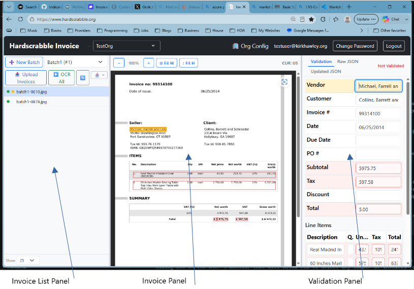

Hardscrabble Invoice is an invoice management app. Its purpose is to allow the user to upload invoices, OCR them, and give the user a usable edit-and-validation user interface that automatically identifies possible inaccuracies.
User Limits: Batches: Unlimited Invoices per Batch: 100 Pages per Invoice: 20
Guest User Limits: Batches: 2 Invoices per Batch: 20 Pages Per Invoice: 20
Beta User Limits: Max OCRed Pages: 500

The Invoice List Panel contains a Batch selector, a list of the Invoices in the Batch, and some buttons to select batches. Selecting an Invoice by clicking it in the list displays the Invoice in the Invoice Panel.
The Invoice Panel is where the Invoice is displayed.
The Validation Panel is where the OCR data for the displayed Invoice can be inspected for errors. It has 3 tabs:
This image shows one batch containing one Invoice. There are two dots to the left of the invoice name. The green dot indicates that the invoice uploaded successfully. The orange dot indicates that the invoice has not yet been approved.
Invoices are processed in batches. An organization has a list of its batches. Each batch will contain multiple images.
Uploading Invoices: Usually a user will create a batch, upload multiple invoices (pdf, jpg, or png files) to the batch. Successfully uploaded files will have a green dot next to them.
OCRing Invoices: Once the upload is done, the batch can be submitted for OCR by clicking the "OCR All" button - the batch will be sent to the OCR Queue, and a red "Q" will appear to the left of each invoice name. The OCR will take place in the background. When each image has finished processing, the red "Q" will be replaced by an orange dot.
Single invoices can be OCRed (or re-OCRed) by right-clicking the invoice and selecting "Run OCR". For Invoices that have not been OCRed, there is also a "Run OCR" button in the Validation panel.
Upload Process: After a batch is created and/or selected, clicking the Upload Invoices button will open a dialog box on the user's machine that will allow him to select any number of invoices for upload to that batch.
OCR Process: Hardscrabble Invoice employs a 2-step OCR process. The main process uses Azure Document Intelligence to OCR the invoice. The secondary process employs a local OCR solution that runs while Azure Document Intelligence process the invoice.
Invoice Queuing: For later.
Automatic Error Checks: When both OCR process are done, the results are compared an analyzed for several types of errors: 1. Azure Document Intelligence Field Confidence 2. Secondary OCR Field Confidence 3. Per-field mismatches between the two OCR results 4. Math errors in line items. 5. Math errors in invoice total.
Validation:
As the user tabs through the fields in the validation panel, the corresponding field is highlighted on the invoice image. If the user clicks on a particular field in either window, the corresponding field is highlighted in the other window.
There are several ways Hardscrabble Invoice tries to identify problem fields:
Possible errors that have been identified by the automatic validation are marked in red. This does not mean that the OCR result is incorrect - just that confidence in that field is low, for one or more of the reasons listed above. When the user verifies that the OCR result doesn't match what he sees on the scanned invoice, he can edit the value.
The user can save his changes at any time by clicking on the Save button at the bottom of the edit form. When satisfied that the results are correct, the user can accept them by clicking on the Accept button. This causes the orange button to the left of the Invoice name in the Invoice List Panel to change to green. Notr that if the user spots an error, he can still make changes and save them for an Accepted Invoice.
The user can simply click the Accept button if all fields look correct.
Invoice Download:
Organization Deletion When Organizations are deleted, the data data is retained for 2 weeks. During that period, it is possible to reactivate the Organization by contacting Hardscrabble. When the retention period is over, the Organization and all of its data will be physically and permanently deleted.
Batch Deletion When batches have been validated and uploaded to the customer, the batch is marked for deletion. The batch will be permanently deleted 14 days after it is marked for deletion. User Management Deleting one org removes that org’s memberships; the user account stays as long as they have at least one remaining membership.
If the deleted org was their last org, then a non-global-admin user is deleted from Identity too, so yes — their registration is removed. Global admins are exempt and are kept even with no org memberships.